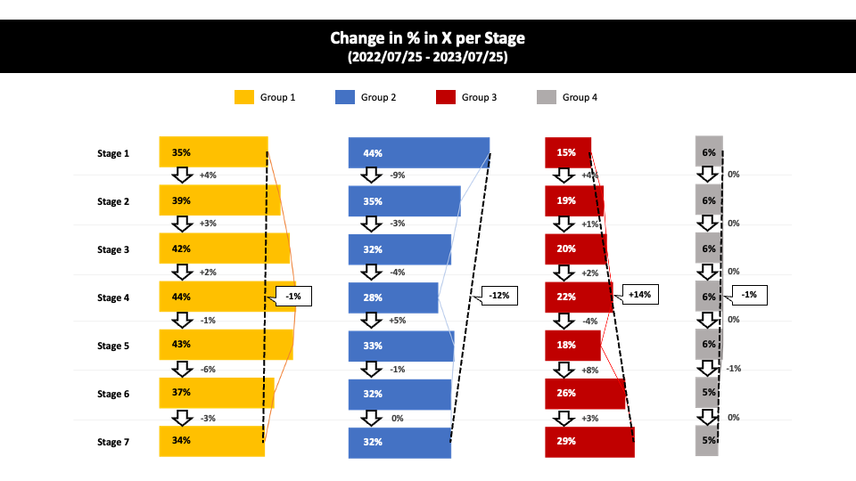
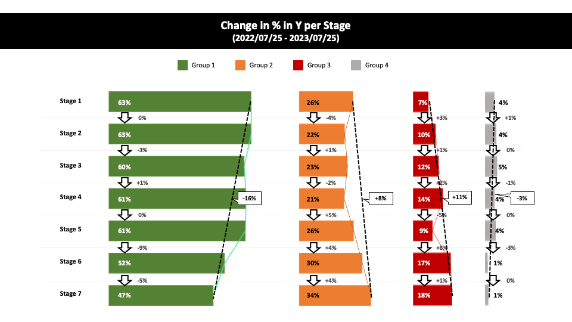
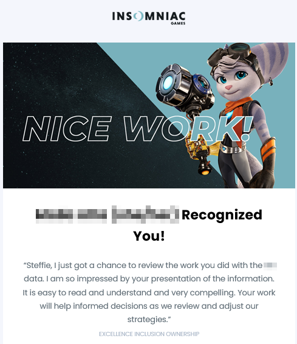

This is a data visualization project I conducted as a Data Analyst Intern at Insomniac Games
*Sensitive information is omitted due to NDA*
Project
The Problem
The stakeholders wanted to identify potential disparities in the representation of specific groups within certain decision-making processes.
The Goal
Determine which groups exhibit over-representation at each stage of the decisino-making process and investigate any shifts in group representation.
Analysis
I employed Excel to process raw data and calculate the percentage of each group involved in each decision-making process.
Based on the Excel calculation, I utilized PowerPoint to visualize the data.
Key Findings

Regarding "X," Group 1 experienced a mere 1% reduction from start to finish, while Group 2 witnessed a substantial 12% decline. Group 3 consistently demonstrated growth, with an impressive 14% increase. An in-depth investigation is warranted to enhance the representation of Group 2 within this process.

In the context of "Y," Group 1 maintained the largest share (63%) of all groups, even after being subject to filtering throughout the stages. While other groups saw an uptick in their representation, it is imperative to develop a strategy to address the over-representation of Group 1 as a whole.
Impact

My work on this project was acknowledged by the stakeholders on the company's recognition and celebration platform. Furthermore, I received another request for data visualization due to their satisfaction with my performance.